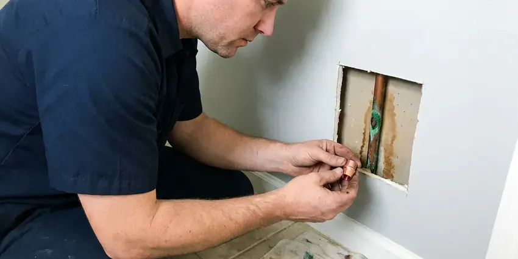

Underground Pipe Repair in Brookhaven, WV
Our crew pinpoints underground leaks with acoustic and tracer equipment, then digs only where necessary for property owners in Brookhaven, WV.
- Licensed and Insured Plumbers
- Durable Repairs
- Foundation Protection
- Licensed and Insured

Underground Pipe Broken? Get It Repaired Fast in Brookhaven, WV.
Our experienced technicians are ready to diagnose and repair your buried plumbing with minimal disruption.
Your Go-To for Underground Pipe Repair in Brookhaven, WV
GJK Plumbing specializes in underground pipe repair, addressing a range of issues from minor leaks to major breaks in your buried plumbing system. Rocky, steep terrain is common across West Virginia, and many homes sit on hillsides where drainage and slope movement affect buried lines. Shifting ground can put significant stress on underground pipes, leading to cracks or separations that require expert repair.
Our expertise includes:
- Accurate underground leak detection and locating.
- Accurate leak detection for buried lines.
- Acoustic and tracer gas leak detection on buried water lines

Additional Plumbing Repair Services in Brookhaven, WV
We offer expert plumbing repair services across Brookhaven, WV to fix leaks, restore flow, and keep your system running smoothly.


Customers
Why Choose GJK Plumbing for Underground Pipe Repair in Brookhaven, WV?
We carry the locating equipment, excavation tools and pipe materials needed to finish most underground repairs in one trip. You get one crew from start to end.
- Lasting Solutions, We focus on durable repairs and replacement options that withstand the harsh conditions of buried infrastructure.
- Pinpoint Locating, Acoustic and electronic tools pin the leak down to within a few feet.
- Small Excavations, Precise locating means we dig one small access pit whenever possible.
Citywide Coverage
We serve the entire Brookhaven area for all underground pipe repair needs, understanding that issues with buried lines can arise anywhere. Our fast response team is equipped to reach your home quickly, no matter your location within Brookhaven.
Experienced Team
The GJK Plumbing team is highly skilled in identifying and resolving even the most elusive underground pipe problems. Their expertise means that whether it's a minor leak or a major sewer line collapse, the repair is performed safely and effectively.
Safety-First Approach
We put first the safety of your property and our technicians during underground pipe repair, following rigorous protocols and using proper shoring and safety equipment. All work complies with West Virginia plumbing regulations, giving you confidence in our services.
Trusted Certified Brookhaven Plumbing Services Professionals
At GJK Plumbing, we take pride in providing licensed, certified plumbing services throughout Brookhaven, WV. Backed by recognized industry credentials, our experienced plumbers combine technical skill with genuine customer care. Whether it is repair, installation, or maintenance, we follow strict safety and quality standards to deliver lasting results you can trust.
Call Us Now PHCC Plumbing Contractor Recognition
PHCC Plumbing Contractor Recognition Better Business Bureau (BBB) Accreditation
Better Business Bureau (BBB) Accreditation Angi Certified Pro
Angi Certified Pro ISO 9001 Quality Management Certification
ISO 9001 Quality Management CertificationTrusted Underground Pipe Repair Services in Brookhaven, WV
Irrigation and Yard Line Repair in Brookhaven
Drip lines and sprinkler supply pipes are often shallow and easy to break during landscaping or by roots. A broken irrigation main can run up a water bill fast in summer. We repair PVC and poly irrigation mains, replace failed backflow connections and fix the supply line to the valve manifold. We can also reroute exposed lines away from trees.

Underground Water Line Repair in Brookhaven, WV
A leaking underground water line can lead to high water bills, reduced water pressure and even foundation damage, a serious concern for any home. We use advanced leak detection equipment to locate the exact source of the leak without unnecessary digging. Whether it's a small crack or a major rupture, we provide precise repairs to restore your clean water supply efficiently.
Underground Pipe Repair Cost Comparison in Brookhaven, WV
A single point repair on a shallow water line is the most economical option. Pipe bursting or pulling a new line through the old path costs more but avoids open trenching and long-term risk. Full trench replacement is sometimes needed when the old route is blocked or the pipe is too damaged. We explain each method and its cost so you can choose the best value.
Pool and Outbuilding Supply Line Repair in Brookhaven, WV
Many properties have buried water lines feeding a pool auto-fill, a guest house, an outdoor kitchen or a detached garage. These lines are often longer than the main service and harder to locate. We use tracer wire and acoustic equipment to find leaks along the full run. Repairs are made with direct-bury rated pipe and tested before we close up.
Commercial Underground Pipe Repair in Brookhaven
Businesses in Brookhaven rely on robust plumbing infrastructure, and underground pipe issues can severely impact operations. GJK Plumbing offers specialized commercial underground pipe repair services, handling larger diameter pipes and more complex systems. We work efficiently to minimize downtime and keep your commercial property's plumbing working properly.
Galvanized and Polybutylene Line Replacement in Brookhaven
Galvanized steel pipe rusts from the inside, and polybutylene pipe becomes brittle and splits without warning. If your underground service is either material, repairs are often temporary. We replace the line with PEX or Type K copper, often by pulling the new pipe through the old path to limit digging. A new line restores pressure and removes the risk of repeated leaks.
Emergency Underground Pipe Services in Brookhaven
An unexpected underground pipe burst or severe leak can be a plumbing emergency. GJK Plumbing offers fast-response emergency services for underground pipe repair in Brookhaven. Our technicians are equipped to quickly diagnose the problem and put immediate solutions in place to prevent further damage to your home or business.

Water Main Underground Repair in Brookhaven
A leaking or broken water main can lead to major water loss and property damage. GJK Plumbing provides expert repair for underground water mains, using durable materials like PEX or copper for a long-lasting fix. We can promptly locate the break using non-invasive methods and restore your home's water supply with minimal disruption.
Underground Pipe Repair Near Me in Brookhaven, WV
When you search for "underground pipe repair near me" in Brookhaven, WV, GJK Plumbing is your go-to local expert. We understand the plumbing challenges that homes and businesses in this area face, from shifting soil to changing temperatures.
When you search for "underground pipe repair near me" in Brookhaven, WV, GJK Plumbing is your reliable local choice. We understand the plumbing infrastructure challenges in our area, including the impact of soil movement and changing temperatures on buried pipes. Our proximity means faster response times and technicians who are familiar with local conditions.
GJK Plumbing at a Glance
- Licensed and insured plumbers serving Brookhaven, WV
- Same-day appointments and 24/7 emergency response
- Upfront, flat-rate pricing before work begins
- 4.8-star rated by 832+ West Virginia customers
Brookhaven Map
Brookhaven Information
- Population
- 5,707
- Area codes
- Local
- Service area
- Brookhaven and communities within 40 miles
- Nearby
- Morgantown, Cheat Lake, Fairmont, Bridgeport
Underground pipe condition is important for homes in Brookhaven, WV, where soil movement and heavy rain can put pressure on buried plumbing. Damp basements and crawlspaces are common in Brookhaven and around the state, which can accelerate corrosion on pipes and fittings.
Expert Services
Trust our professionals for reliable GJK Plumbing solutions in Brookhaven, WV.
Our Specialized Plumbing Services in Brookhaven, WV
At GJK Plumbing, we provide a complete range of plumbing services across Brookhaven, WV. From leak detection to full system installations, our team ensures fast, precise, and affordable service for both residential and commercial properties. Explore our core services below:


Here Is How Our Underground Pipe Repair Process Works in Brookhaven, WV
We follow a clear, step-by-step approach to diagnose and repair your underground pipes, keeping you informed every step of the way.
Request a Quote
Start by calling (681) 223-3607 to schedule an appointment. We'll discuss your underground pipe concerns and set up a convenient time for our technicians to visit your Brookhaven property.
Diagnostic Inspection
Our team uses modern camera inspections and listening devices to accurately locate the exact source and nature of the underground pipe issue without unnecessary digging.
Repair & Restore
Based on our findings, we'll present the best repair options, including traditional excavation or trenchless methods. We then perform the repair, ensuring code compliance and restoring your property with care.
Frequently Asked Questions About Underground Pipe Repair in Brookhaven
The cost of underground pipe repair in Brookhaven, WV can vary a lot, typically ranging from $500 for minor spot repairs to $3,000 to $10,000 or more for trenchless full line replacements, or even more for extensive excavation and re-piping. Factors include the pipe material, depth, length of the damaged section, the repair method chosen and the extent of property restoration needed. We provide transparent, upfront pricing after a thorough diagnosis.
Shallow irrigation leaks are sometimes a manageable DIY repair. Main water lines and sewer laterals require locating, utility marking and code-compliant fittings, so a licensed plumber is the safer choice.
The length of an underground pipe repair depends heavily on the severity and location of the damage, as well as the repair method chosen. Minor repairs using trenchless techniques might be completed in a single day. More extensive issues, such as full sewer line replacements requiring excavation, could take two to five days, including restoration work.
In most cities, the homeowner owns and maintains the water line from the meter to the house. The utility is usually responsible for the meter and the line on the street side. We can help confirm which side the leak is on.
For water lines we usually use PEX or Type K copper, both approved for direct burial. For sewer lines we use Schedule 40 PVC. The right choice depends on the existing pipe and local code.
Look for unusually wet spots in your yard, unexplained increases in your water bill, foul odors, decreased water pressure or gurgling sounds from drains. These can all point to a hidden leak or blockage in your underground plumbing system.
GJK Plumbing uses high-quality, industry-approved materials from trusted brands known for durability and longevity. This includes PEX piping from manufacturers like Uponor or Viega, and various PVC and ABS pipe products that meet ASTM standards.
Many water utilities offer a one-time leak adjustment if you repair the leak quickly and provide proof. We give you an invoice and repair documentation to support your request.
What People Are Saying About Our Plumbing Experts?

Laura S.
I scheduled a water heater replacement, and the team made the process smooth and affordable. The new unit works perfectly, and they cleaned up after completing the job.
Water Heater Replacement · Fairmont, WV
James P.
Our commercial plumbing system had a leak under the sink, and GJK Plumbing handled it professionally. The plumbers arrived quickly and restored everything without disruption to our customers.
Commercial Plumbing · Bridgeport, WV
Emily R.
I called GJK Plumbing for plumbing repair, and the technician was fast, polite, and thorough. They explained the problem clearly and fixed it the same day. I will definitely hire them again. Highly recommended!
Plumbing Repair · Morgantown, WVRobert G.
The trenchless sewer replacement saved our front yard. They walked us through the camera inspection footage first so we knew exactly what we were paying for.
Sewer Line Replacement · Morgantown, WVSofia M.
Two new toilets installed in one visit, no mess left behind, and the tech even adjusted a faucet he noticed was dripping. Fair pricing and really friendly.
Toilet Installation · Cheat Lake, WV
Patricia H.
We had a slab leak that two other companies could not find. GJK Plumbing located it in under an hour, explained our options, and the price matched the quote to the dollar.
Slab Leak Repair · Brookhaven, WV